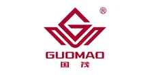

Собственное производство в Челябинске. Замена Guomao по присоединительным размерам — без переделки оборудования. Гарантия 24 месяца, отгрузка от 3 дней.
Изготавливаем аналоги редукторов и мотор-редукторов Guomao под замену вышедшего из строя привода — по присоединительным размерам, валам и передаточному числу. Точную модель аналога подбираем по вашему шильду или чертежу.

| Что заменяем | Редукторы и мотор-редукторы Guomao |
|---|---|
| Наш аналог | Производство Челябинск — Ч, МЧ, Ц2У, КЦ, 4МЦ2С и др. |
| Гарантия | 24 месяца |
| Подбор | По модели или шильду — за 15 минут |
Совпадают присоединительные размеры, валы и фланцы — узел встаёт на штатное место.
Вдвое выше среднерыночной.
Отгрузка со склада от 3 дней — не ждать импорт месяцами.
Пришлите фото шильда или модель — подберём аналог за 15 минут.
Оставьте контакты или пришлите модель/шильд — инженер подберёт аналог, рассчитает присоединительные размеры и пришлёт КП.
Получить КП